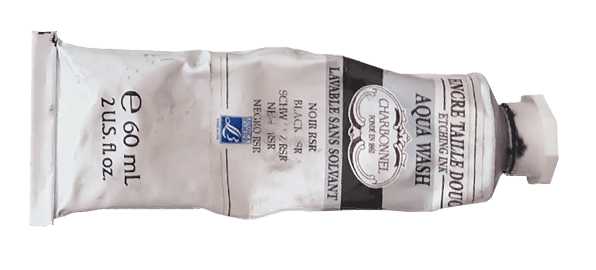

b fachada _ é pra meninos
chalcography printing,
porto 2021.
This project, I made 10 illustrations in zinc plates, using etching and aquatint. My theme was the 10 songs from B Fachada’s album “É para Meninos”, a children’s album, but with an ironic and comical tone that I always liked. Each illustration corresponds to a song and my idea would be that the prints could be included in the CD booklet.
